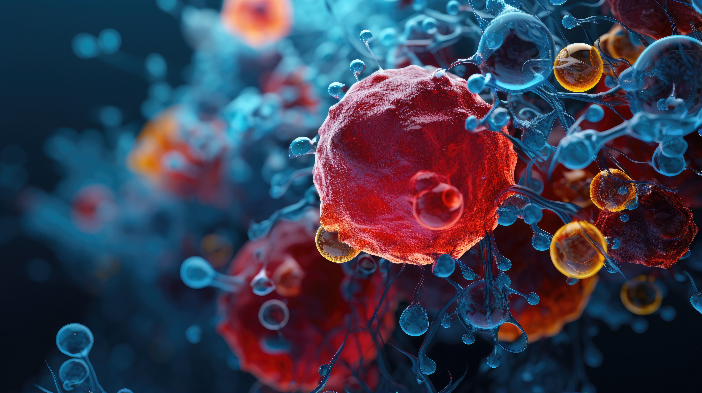
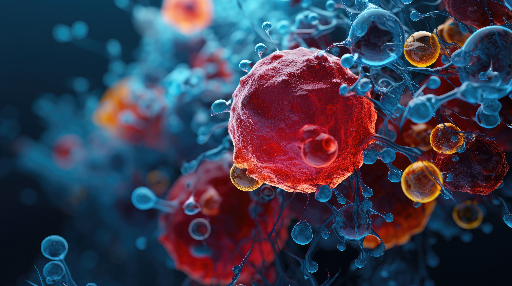

Hello there ! I am Lucas, currently a PhD student at the Paris Brain Institute (ICM) and researcher at Columbia University Irving Medical Center, specializing in Genetics and Tumor Development. My research primarily focuses on Primary Central Nervous (PCNSL), where I leverage both image and omics data. Drawing on my background in mathematics and computer science, I employ applied AI techniques to address challenges in patient diagnosis.
My role at the ICM does not only fulfill my passion for research and applied mathematics but also provided me with invaluable opportunities to apply these skills to the dynamic and important landscape of medical healthcare.
 
